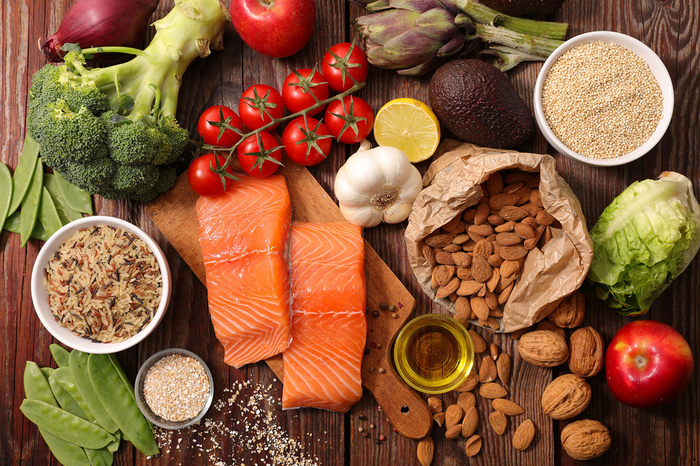
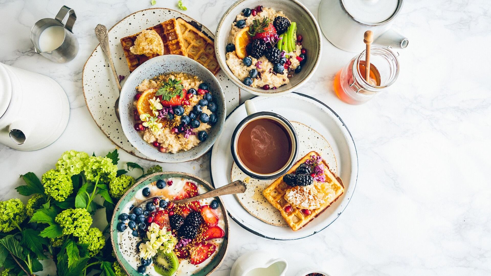
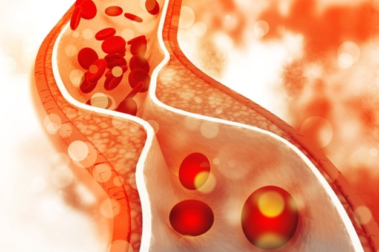

ПОЧЕМУ НУЖНО ЕСТЬ ЧАСТО?
Для многих из вас наверное не секрет, что приверженцы правильного питания помимо соблюдения специально вычисленной для них нормы калорий за день, пропагандируют разбиение употребления этих самых калорий на несколько приемов пищи в день, а именно 4-5, что несколько чаще привычных завтрака, обеда и ужина. Это связано с процессами, которые происходят в человеческом организме до и после приемов пищи каждый день, а также с различными психологическими и эмоциональными аспектами работы над своими пищевыми привычками.
Одним из главных факторов в пользу дробного питания является количество питательных веществ, которые человеческий организм может усвоить за один прием пищи. Как выяснили ученые, это количество ограниченно. То есть, независимо от количества съеденных белков, жиров и углеводов, усваивается только определенная их часть. Цифра варьируется в зависимости от возраста, пола, телосложения, образа жизни, физической активности, генетики и прочих факторов. Но она существует и поэтому все излишки – неусвоенные вещества – организм запасливо отложит в виде жира на случай голодовки.
К тому же, системы регуляции процессов в организме устроены таким образом, что чем реже пища в него поступает, тем сильнее нарастает “тревога” организма за его будущее. Поступает сигнал к наращиванию запасов, и в виде жировых отложений скапливается больше веществ. Главная цель любого организма – выжить, сохранить себя. В условиях редких приемов пищи, особенно если вы часто забываете поесть в связи с работой, учебой или другими делами, нет постоянства. Неизвестно, когда необходимые вещества поступят вновь, поэтому мозг дает сигнал запастись ими впрок.
Также, между приемами пищи вырабатывается гормон грелин. Он отвечает за регулировку чувства голода в организме. Во время голодания его уровень повышается, после приема пищи – снижается. То есть, чем выше его количество, тем сильнее вы хотите есть. И, соответственно, чем дольше промежутки между приемами пищи, тем выше становится уровень этого гормона и тем больше еды вы рискуете съесть, так как уже очень голодны и просыпается “зверский аппетит”. Переедание чревато пунктом, описанным выше – излишки отложатся в жир. Вот и получается замкнутый круг – утром не успели позавтракать, в обед не было времени, вечером переели, за ночь на боках скопились излишки.
Помимо энергии, поступающей с пищей, организм нуждается в постоянном притоке аминокислот. Они необходимы для регулирования работы мозга и центральной нервной системы. Аминокислоты расщепляются в основном из белков. Тем самым важно не только то, сколько раз в день вы едите, но и то, из чего именно состоят эти калории и какой уровень физической активности вы поддерживаете. Дело в том, что недополучая аминокислоты из пищи, организм синтезирует их из мышечных тканей, так как это наиболее быстрый путь их получения (в отличие от расщепления жиров). Если необходимое количество будет поступать с пищей регулярно, а в жизни будут присутствовать постоянные физические нагрузки – мышцы будут активно использоваться и разрушать мышечные волокна организм не сможет. В таком случае, даже при недостатке, аминокислоты начнут синтезироваться из жиров, это более медленный, но при этом вполне логичный процесс, которого и добиваются все желающие похудеть.
Этот же фактор важен и для тех, кто стремиться набрать массу. Ведь в большинстве своем вы хотите набрать здоровую мышечную массу, а не увеличить размер жировых отложений, верно? Именно поэтому дробное и полноценное питание идеально подходит для соблюдения баланса аминокислот, а постоянные тренировки не только не дадут мышцам распадаться, но и укрепят и увеличат их массу.
Кроме всего вышеперечисленного, исследования показали, что частые приемы пищи снижают уровень глюкозы и холестерина в крови. Поддержание стабильного уровня глюкозы – один из важнейших факторов в обеспечении здоровья организма. Ведь скачки инсулина провоцируют развитие множества заболеваний – ожирения, диабета, сердечно-сосудистых и прочих. А повышенный уровень холестерина может в перспективе спровоцировать инсульт и инфаркт.
Важно упомянуть и психологическую сторону здорового питания. Психика является одним из основных, руководящих всеми процессами в жизни человека, фактором. Любые ограничения и изменения привычного образа жизни неизбежно вызывают стресс. А стресс провоцирует срывы и нарушения, возникает желание сдаться, теряется мотивация и силы воли не хватает, чтобы идти к поставленной цели. Здесь на помощь приходит психологический прием – обман организма путем разбиения привычного рациона на большее количество приемов пищи. Согласитесь, перспектива есть три раза в день не воодушевляет, а вот возможность делать перекусы сглаживает переход на здоровое питание.
Поэтому дробное питание еще и отличная возможность минимизировать психологический стресс при похудении. Мысль о том, что можно будет поесть уже через 3-4 часа после предыдущего приема пищи приносит радость и промежутки, когда вы не едите, переживаются намного легче.
Подытоживая все, сказанное выше, лучше всего придерживаться пятиразового питания, состоящего из завтрака, обеда, ужина и двух перекусов между ними. Разбивать необходимую за день норму калорий равномерно в течении дня с учетом соотношения белков, жиров и углеводов. То есть учитывать не только количество, но и качество потребляемой пищи. Благодаря этому даже можно заменять одни варианты приема пищи на другие и выбирать то, что нравится именно вам.